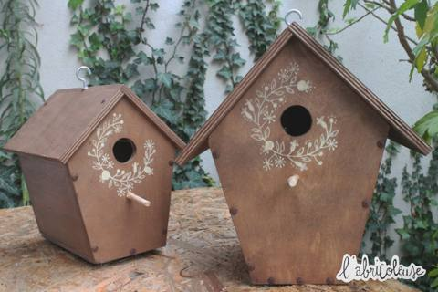

Atelier matériaux souples
L'atelier des matériaux souples occupe la cabane C3 de La Fabrique, dans le bâtiment. On y coud et on y répare le cuir et le tissu, pour réparer, fabriquer ou apprendre.
Le matériel
Une surjeteuse-raseuse industrielle, une piqueuse plate, des machines à coudre domestiques et le petit matériel de couture.
Prochaines séances
Jeudi 3 décembre 2026
-

18 h - 20 h Matériaux souples
Réservation gratuite · 5 places restantes Réserver
Jeudi 10 décembre 2026
-

17 h - 19 h Matériaux souples
Paiement sur place
Jeudi 21 janvier 2027
-
18 h - 21 h Matériaux souples
Réservation gratuite · 1 place restante Réserver
Jeudi 4 mars 2027
-
14 h - 17 h Matériaux souples
Réservation payante · 3 places restantes Réserver
-

18 h - 21 h Matériaux souples
Auto-réparation en cordonnerie
Réservation gratuite Réserver
Les évènements
- Accompagnement en couture
- Auto-réparation en cordonnerieVenez apprendre à réparer vos chaussures et accessoires en cuir avec l'aide d'une professionnelle !
- Club BoroApprenez la technique japonaise du boro pour réparer vos vêtements et accessoires en les sublimant !
- Club retouchesFaites-vous aider à retoucher vos vêtements !
- Projet libre en cordonnerie